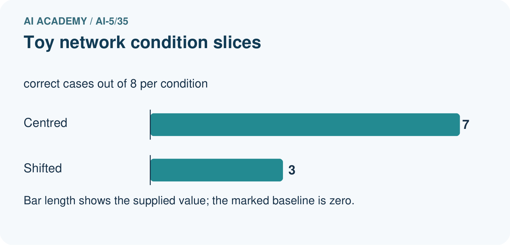
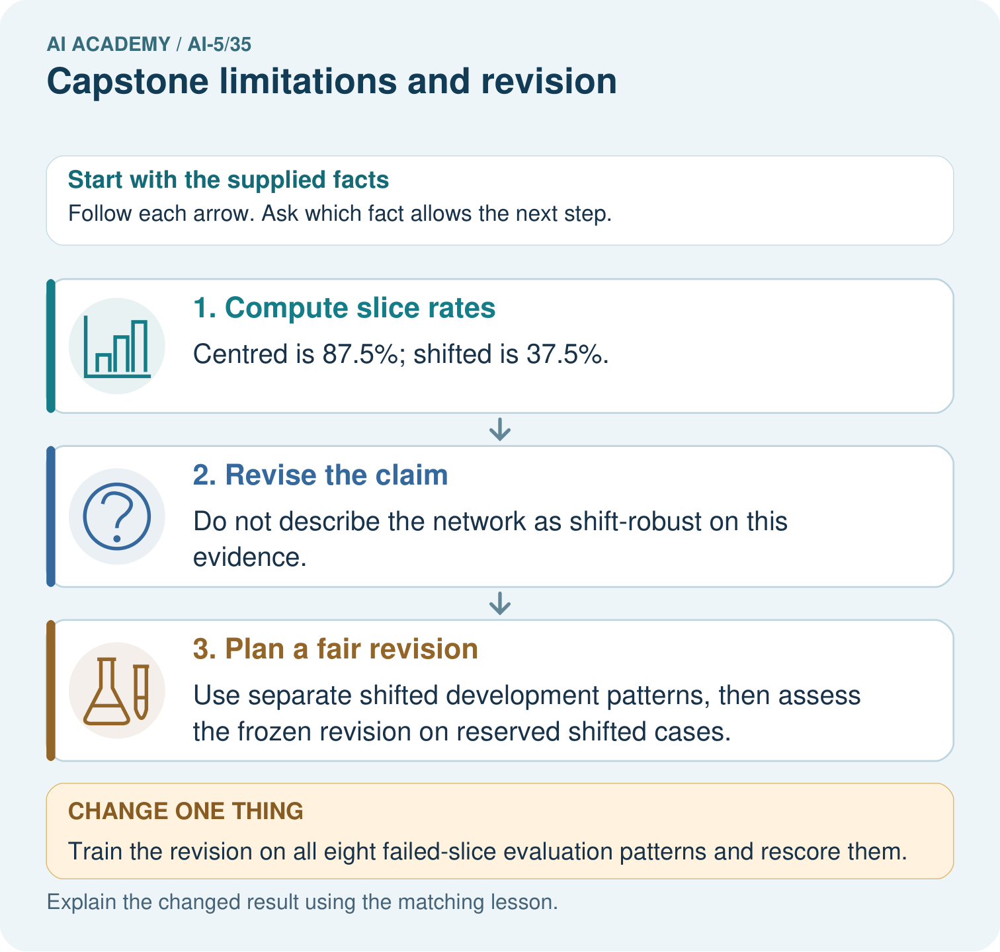

AI Academy · Level 5 · Grade 10 · Week 35 · Teacher guide
Capstone limitations and revision
Learn to understand, design, build, test and explain AI systems responsibly.
Project: Image-pattern Network Investigation
Teacher guide · 1 of 8
Prepare the purpose, prerequisites and materials
Teach the learning cycle
Primary target: Evaluate a frozen candidate and baseline on final rows
| Session | Sequence and minutes | Resources |
|---|---|---|
| Session 1 · Understand · 45 min | 0–7: recall and prerequisite; 7–15: inspect the concrete case and predict; 15–30: teacher models the worked trace; 30–40: learners explain a step using the text and visual; 40–45: check the core idea. | Sections 1–6; record the brief recall in the workbook. |
| Session 2 · Practise · 45 min | 0–5: retrieve the procedure; 5–15: W2 completion practice; 15–23: explain and check with a partner; 23–30: each learner answers the misconception check; 30–40: targeted reteaching or a harder variation; 40–45: prepare the investigation. | Sections 7–10; use the matching workbook W2 and misconception check. |
| Session 3 · Investigate and transfer · 45 min | 0–5: retrieve the decision rule; 5–20: investigate or trace; 20–30: start the independent case; 30–38: connect the project; 38–43: act on feedback; 43–45: plan the return check. | Sections 9 and 11–14. Give extra time to finish the full task set; use Section 15 when the week includes a coding lab. |
This is a starting allocation of 135 minutes, not a validated duration. Preserve all named topics. Schedule extra time for connected examples, the full investigation, independent cases and project building. Repeated copies of a case share one recorded attempt; they are not new evidence.
Retrieval answer guidance
Capstone controlled experiments
Without opening the old lesson, explain one key idea from Capstone controlled experiments. Give an example and a mistake that the idea helps you avoid.
Look for: Trace matched two-update learning-rate experiments
Reference example, not the only acceptable wording: Teacher explanation: Hold training and validation rows, initial a, architecture/bias policy, loss, update count and evaluation metric fixed. Change learning rate.
Documenting a network experiment
Without opening the old lesson, explain one key idea from Documenting a network experiment. Give an example and a mistake that the idea helps you avoid.
Look for: Record a network experiment with enough detail to replay its calculations
Reference example, not the only acceptable wording: Teacher explanation: Predict max(0, a*x); start a = 1 with no bias; rate 0.1; two full-batch updates; MSE is mean squared prediction error. T1 and T2 train, V1 validates; no shuffling or normalisation. Select lower validation MSE, ties to earlier update. Record the actual Python version, alongside the code and Python float arithmetic.
Uncertainty and failure analysis
Without opening the old lesson, explain one key idea from Uncertainty and failure analysis. Give an example and a mistake that the idea helps you avoid.
Look for: Distinguish a predicted class, confidence score and observed correctness
Reference example, not the only acceptable wording: Teacher explanation: B predicts 1 with confidence 0.90 and is wrong. E predicts 0 with confidence 0.55 and is correct. F predicts 0 with confidence 0.90 and is wrong. F’s low score for class 1 corresponds to a high score for class 0, the class selected.
Use two 45-minute sessions. This capstone uses constructed scalar ReLU regression so every calculation is inspectable. It is an experiment in training and evidence, not a real-world deployment. Preserve written plans, data roles and raw predictions. Optional local Python requires no external packages or AI account. Do not expose independent-task solutions before collecting work.
Outcomes
Evaluate a frozen candidate and baseline on final rows
Identify a distribution limitation from raw errors
Distinguish revision checks from new independent evaluation
Preparation
Printed lesson and workbook; paper and pencil
Calculator; optional local Python 3 interpreter
Fictional data only; reserve the independent task and fresh retry until assessment
Prerequisite answer
No. Once final results influence changes, those rows become development evidence for the revised procedure.
End goal for the pictorial case
Explain capstone limitations and revision with a traceable toy-network case and a bounded conclusion.
This added worked case illustrates the week’s main idea. Retain all original and connected topics; schedule its practice within the teaching cycle.
Teacher guide · 2 of 8
Explain and model the mechanism
Freeze the Week 34 candidate: max(0, a*x), initial a = 1, rate 0.2, two full-batch updates on (1,2),(2,4), no bias. The final weight is 2. The baseline is unchanged at a = 1. Now open final rows F1=(5,10), F2=(6,12), F3=(-1,-2), F4=(-2,-4). These fictional rows deliberately include a condition absent from the positive training and validation inputs. Opening them is an evaluation event, not permission to tune on them while retaining an independent-test claim.
Write raw predictions for both procedures before summarising. A low overall error can hide a systematic problem in a condition. These four constructed examples do not estimate prevalence or real-world performance.
Baseline squared errors are 25,36,4,16, so MSE is 81/4 = 20.25. Candidate squared errors are 0,0,4,16, so MSE is 20/4 = 5. The candidate passes the strict lower-MSE final criterion on these four rows. On the two negative-input rows its MSE is (4+16)/2 = 10; on the positive rows it is zero.
| Term | Meaning |
|---|---|
| Frozen procedure | A recorded procedure fixed before final evaluation |
| Residual | Prediction minus observed target |
| Revision | A documented change informed by earlier evidence |
| Coverage limitation | A condition or group missing or poorly represented in the evidence |
Keep the evidence roles separate
Guided: ReLU predicts 0, residual 6, squared error 36. Signed 2*x predicts -6, residual 0, squared error 0 on the revealed case. This supports representational feasibility, not independent generalisation. Exit: original candidate MSE 5 versus baseline 20.25 on four constructed final rows; the changed architecture lacks new independent evaluation.
Model the reasoning aloud
Use the complete worked example below before asking learners to complete W2. Reveal a small part, invite a prediction, then explain the deciding step. These teacher notes contain solutions; do not reveal the independent case answer during modelling.
The ReLU output cannot be negative. When targets are negative, no choice of this scalar weight can produce the required negative output. More epochs do not remove that output constraint. A proposed signed linear output a*x would represent negative targets, but it changes the architecture. It needs a new version, appropriate fitting and selection, and fresh reserved evaluation.
Running that proposal on F3 and F4 checks the revealed failures. It does not create new independent final evidence. Preserve the original test result and label later scores as revision or regression checks. Do not replace the earlier failure report with a score from a new model on already inspected rows.
| Thinking move | Teacher prompt |
|---|---|
| Plan | What is given? What is the question? Which procedure fits these facts? |
| Do | Point to each input and intermediate step in the worked trace. Name the rule that allows the next step. |
| Check | Does the output answer the question? Which assumption or limitation prevents a larger claim? |
Use the diagram and verbal explanation together. Ask learners to match a sentence to a specific visual step; do not assign learners fixed visual or auditory learning styles.
A pictorial worked case: Capstone limitations and revision
Revise a limited claim after a slice failure. A toy network works better on centred patterns than on shifted patterns, so the team narrows its initial claim.
The facts we will use
Centred slice: 7/8 correct. Shifted slice: 3/8 correct. The network and label rubric are frozen.


Read the picture one step at a time
Why this result follows
A limitation guides a better next experiment. Training on a failed evaluation example may help development, but that exposed example cannot remain the untouched evidence for the revision.
What this example does not establish
Small slices may vary; this example diagnoses an observed weakness without inventing a population rate or cause.
Change one thing in the pictured case
Change: Train the revision on all eight failed-slice evaluation patterns and rescore them.
Prediction: Treat the score as exposed-case development, not independent evidence of shift robustness.
Reason: The evaluation records now influenced learning and model selection.
Ask while showing the picture
Cover the result. Ask learners to name the inputs and predict the next step. Uncover one step, connect the icon to the actual procedure, and explain its evidence. Then change the supplied condition and compare. The picture is a representation; it does not document execution of a real AI model.
Teacher guide · 3 of 8
Demonstrate and guide practice
| Time or stage | Teacher action |
|---|---|
| Session 1 start to 7 minutes | Retrieve the prerequisite and ask students to explain the data roles. |
| 7 to 18 minutes | Read section 1 and complete W1 with a recorded reason. |
| 18 to 32 minutes | Trace section 2 and complete W2; compare raw values before conclusions. |
| 32 to 45 minutes | Explain the diagram and complete W3 in pairs; record any support. |
| Session 2 start to 8 minutes | Complete the guided response and discuss why the evidence has limits. |
| 8 to 20 minutes | Read the remaining explanation and prepare a concise experiment record. |
| 20 to 35 minutes | Collect W4 independently. Require calculations and a bounded claim. |
| 35 to 45 minutes | Use W5 and the exit response for feedback. Administer the fresh retry after feedback without the earlier solution. |
Use the worked example in Sections 3 and 6. Collect a prediction before revealing its result; ask the learner to point to each intermediate fact.
Provide a frame with question, fixed settings, changed setting, data roles, raw predictions, metric, conclusion and limitation. Allow a calculator and explicit squared-error columns. Extension: implement the arithmetic locally, preserve the program version, and explain why a successful replay adds no independent test cases.
Reduce help deliberately
Completion task: Compute both overall MSE values and the candidate negative-input MSE. Apply the strict final criterion.
Teacher check: Teacher explanation: Baseline MSE 20.25; candidate MSE 5. Candidate negative-input MSE 10 over two rows. Candidate passes the lower-overall-MSE criterion but has a structural negative-output limitation.
Start by identifying the given inputs together. Leave the intermediate steps blank. If needed, model one step, then withdraw that help on the next step. Move to a full trace only when the partial trace is understood. For partners, alternate explainer and checker; collect a response from every learner before discussion.
Individual reasoning check
Use the worked case for Capstone limitations and revision. Proposed explanation: “Passing a criterion means no failures remain”. Decide whether this explanation is supported. Point to the step or supplied fact that decides; explain your repair if needed.
Expected correction: An aggregate improvement can coexist with systematic subgroup errors.
Collect explanations, not only yes/no votes. If a misunderstanding is common, re-model the relevant step for the class. If it affects a few learners, give a short targeted group explanation while others solve a more demanding variation.
Pictorial practice question
Calculate the slice rates and explain the claim revision. If the team trains on the shifted evaluation patterns, what kind of evidence does their rerun provide?
Reasoned teacher answer
The rates are 87.5% and 37.5%; the shift-robust claim is unsupported here. Training on those evaluation patterns makes a rerun development evidence on exposed cases, requiring fresh reserved cases for an independent check.
Changed-case reasoning: Treat the score as exposed-case development, not independent evidence of shift robustness. The evaluation records now influenced learning and model selection.
Collect each learner’s explanation before discussion. Use the first missing connection between input, deciding step and result to choose support. This question is worked-case practice, not fresh mastery evidence.
Teacher guide · 4 of 8
Run the investigation and diagnose misconceptions
Passing a criterion means no failures remain: An aggregate improvement can coexist with systematic subgroup errors.
Training longer fixes any output constraint: A nonnegative output cannot express a negative target.
A repaired test score is a new final test: The revealed cases informed the repair and now serve as development or regression checks.
Use Section 9 for the evidence ledger. Add a boundary or missing-input case and record the expected response before checking. More successful repeats of one case do not establish wider coverage.
Match the support to the first error
| What the response shows | Next teaching action |
|---|---|
| Missing or misread facts | Read the case aloud, mark supplied versus unknown facts, and let the learner restate it. |
| Wrong procedure | Return to the deciding step in the worked case. Contrast it with the proposed incorrect explanation. |
| Arithmetic or implementation error | Trace intermediate values or lines; preserve the first mismatch and retry that step. |
| Correct result without a reason | Ask for a trace and a changed case before marking independent understanding. |
| An unsupported wider claim | Ask which supplied evidence supports the claim and which further observation would be needed. |
Offer an oral explanation, drawing, enlarged visual or fewer examples when that removes a reading/writing barrier. Keep the same reasoning goal. Stretch secure learners by changing a boundary or assumption and asking them to defend the effect, not simply by assigning more of the same questions.
Teacher guide · 5 of 8
Assess and explain the answers
Guided and exit questions
Guided: ReLU predicts 0, residual 6, squared error 36. Signed 2*x predicts -6, residual 0, squared error 0 on the revealed case. This supports representational feasibility, not independent generalisation. Exit: original candidate MSE 5 versus baseline 20.25 on four constructed final rows; the changed architecture lacks new independent evaluation.
W1 Trace final predictions
For F1–F4 calculate candidate residuals and squared errors.
Teacher explanation: Residuals 0,0,2,4; squared errors 0,0,4,16. The ReLU predictions for both negative inputs are zero.
W2 Compare with the baseline
Compute both overall MSE values and the candidate negative-input MSE. Apply the strict final criterion.
Teacher explanation: Baseline MSE 20.25; candidate MSE 5. Candidate negative-input MSE 10 over two rows. Candidate passes the lower-overall-MSE criterion but has a structural negative-output limitation.
W3 Explain the architecture limit
Why cannot extra training alone make this ReLU output negative? Name a proposed change and the evidence it would require.
Teacher explanation: max(0,a*x) is always nonnegative, regardless of a. A signed linear output can represent negative values; treat it as a changed architecture and run a recorded fitting/selection procedure with fresh reserved final evidence.
W4 Evaluate new evidence independently
A frozen ReLU candidate with a = 3 is compared with baseline a = 1 on final rows (2,6),(4,12),(-1,-3),(-2,-6). Compute both MSE values and candidate MSE on negative inputs. Write a bounded conclusion.
Teacher explanation: Baseline squared errors 16,64,9,36 total 125, MSE 31.25. Candidate squared errors 0,0,9,36 total 45, MSE 11.25. Negative-input MSE 22.5 over two rows. Candidate improves overall on these four constructed cases but still cannot represent negative outputs.
W5 Label a revision honestly
After inspecting F1–F4, a student changes to prediction 2*x and reports “new final MSE 0”. Explain the accurate label and the next evaluation step.
Teacher explanation: The score is a revision check on already inspected final rows. Preserve the original final MSE 5 and the architectural change. Freeze the revised training and selection procedure and evaluate on fresh reserved cases; also retain regression checks.
Independent assessment and fresh retry
W4 requires overall MSE 31.25 versus 11.25 and negative-input MSE 22.5, with a four-case limit. Fresh retry: a = 4, baseline 1, final rows (2,8),(4,16),(-1,-4),(-2,-8). Baseline MSE 65; candidate MSE 20; negative-input MSE 40. Require an aggregate improvement claim alongside the structural failure.
Assess independent transfer
Selected case: A frozen ReLU candidate with a = 3 is compared with baseline a = 1 on final rows (2,6),(4,12),(-1,-3),(-2,-6). Compute both MSE values and candidate MSE on negative inputs. Write a bounded conclusion.
Selected case answer
Teacher explanation: Baseline squared errors 16,64,9,36 total 125, MSE 31.25. Candidate squared errors 0,0,9,36 total 45, MSE 11.25. Negative-input MSE 22.5 over two rows. Candidate improves overall on these four constructed cases but still cannot represent negative outputs.
| Dimension | Evidence required |
|---|---|
| Explanation | Names the applicable idea or procedure and ties it to the supplied facts. |
| Trace and result | Preserves the given inputs and shows the relevant intermediate steps; distinguishes a prediction from an observed execution. |
| Limits | States the assumptions, missing evidence or conditions under which the result would change. |
Record each dimension as not yet, with support, or independent. Accept a valid alternative procedure with a defensible trace. Do not penalise an honestly recorded model failure if the learner correctly explains its evidence and limits.
Feedback that the learner uses
Name the earliest unsupported step and give one action to repair it. Have the learner make that repair now and explain why. Then assess the relevant skill on a fresh, fully specified case. Confirm it was not previously practised with feedback; solve and check the new case before assigning it. A follow-up design prompt is a starting brief, not automatically an equivalent test.
Teacher guide · 6 of 8
Connect the project, support and next lesson
For Image-pattern Network Investigation, use this week’s independent task as a rehearsal for the final evidence pack: A frozen ReLU candidate with a = 3 is compared with baseline a = 1 on final rows (2,6),(4,12),(-1,-3),(-2,-6). Compute both MSE values and candidate MSE on negative inputs. Write a bounded conclusion. Keep actual observations separate from expected results, preserve failures, compare a baseline and explain the limits.
Provide a frame with question, fixed settings, changed setting, data roles, raw predictions, metric, conclusion and limitation. Allow a calculator and explicit squared-error columns. Extension: implement the arithmetic locally, preserve the program version, and explain why a successful replay adds no independent test cases.
Week 36 defends the experiment using preserved plans, results, limitations and an honest account of revision.
Retain the project ledger and assess a changed case after support. Check the relevant prerequisite before carrying this component forward.
Plan the delayed return
Suggested return points in this level: ai-5/36. Use actual classroom dates, adjusting for holidays and gaps. One, three and six teaching weeks are scheduling choices, not a claimed optimal spacing.
At a delayed check, ask for the idea from memory and a changed application. Compare with the earlier independent response and record support used. For a new level, revisit the previous capstone before checking the new prerequisites.
| Record | Teacher evidence |
|---|---|
| Learner code and date | |
| Concept and case used; prior exposure | |
| Explanation / trace / limits | |
| Support and first repair | |
| Changed case and delayed outcome | |
| Next teaching action |
Use the evidence to choose reteaching or the next step. A completed page, confidence rating or attractive project does not by itself demonstrate understanding.
Project evidence from this case
For the Image-pattern Network Investigation, save the labelled trace and the changed-case explanation beside the experiment record. State exactly what this example supports before linking it to the wider capstone claim.
Teacher guide · 7 of 8
Prepare, teach and assess
Teaching target: Evaluate a frozen candidate and baseline on final rows
Prepare the labelled worked-case picture, the matching workbook, fictional input cards and a place for individual responses. Check a local Python 3 environment before class; have a paper-trace version ready.
| Session | Plan | Resources |
|---|---|---|
| Session 1 · Understand · 45 min | 0–7: recall and prerequisite; 7–15: inspect the concrete case and predict; 15–30: teacher models the worked trace; 30–40: learners explain a step using the text and visual; 40–45: check the core idea. | Sections 1–6; record the brief recall in the workbook. |
| Session 2 · Practise · 45 min | 0–5: retrieve the procedure; 5–15: W2 completion practice; 15–23: explain and check with a partner; 23–30: each learner answers the misconception check; 30–40: targeted reteaching or a harder variation; 40–45: prepare the investigation. | Sections 7–10; use the matching workbook W2 and misconception check. |
| Session 3 · Investigate and transfer · 45 min | 0–5: retrieve the decision rule; 5–20: investigate or trace; 20–30: start the independent case; 30–38: connect the project; 38–43: act on feedback; 43–45: plan the return check. | Sections 9 and 11–14. Give extra time to finish the full task set; use Section 15 when the week includes a coding lab. |
Before class, solve the supported practice: Compute both overall MSE values and the candidate negative-input MSE. Apply the strict final criterion.
Reasoned practice answer: Teacher explanation: Baseline MSE 20.25; candidate MSE 5. Candidate negative-input MSE 10 over two rows. Candidate passes the lower-overall-MSE criterion but has a structural negative-output limitation.
Check every learner before discussion: Use the worked case for Capstone limitations and revision. Proposed explanation: “Passing a criterion means no failures remain”. Decide whether this explanation is supported. Point to the step or supplied fact that decides; explain your repair if needed.
Misconception repair: An aggregate improvement can coexist with systematic subgroup errors.
Support: read the exact case aloud, enlarge the labelled picture, supply input cards and model only the first deciding step. Accept a spoken explanation or drawing; retain the reasoning goal.
Extension: Train the revision on all eight failed-slice evaluation patterns and rescore them. Require a prediction and a reason before comparing. Expected result: Treat the score as exposed-case development, not independent evidence of shift robustness. Reason: The evaluation records now influenced learning and model selection.
Independent assessment: withhold the reserved answer until the learner has attempted the new case. Record support separately from correctness.
| Criterion | Not yet | With support | Independent |
|---|---|---|---|
| Explanation | Names an answer without a deciding fact | Uses a hint to link fact and decision | Explains the deciding fact in own words |
| Trace or test | Cannot connect input and result | Completes steps with prompts | Traces or tests a changed case accurately |
| Limits and revision | Claims more than evidence supports | Names a limit after a prompt | States a defensible limit and useful next test |
Project checkpoint: Present and defend. Demonstrate the system, explain one failure and justify the next improvement with evidence.
Use the weekly teacher answer for topic-specific reasoning. A saved progress tick is an activity record; judge mastery from the learner’s explanation and evidence.
Teacher guide · 8 of 8
Use feedback, labs and repair paths
Use the two formative questions as supported practice, not as independent mastery scores. Discuss the deciding evidence rather than accepting a guessed selection.
The feedback comes from the reviewed public worked case. Do not reveal the separately reserved independent teacher answer until the learner has attempted that case.
Ask students to predict before running code. Preserve errors and actual outputs; collect a changed test and an explanation. The branch-boundary and indexing lessons deliberately include failure cases.
Use the earlier worked-explanation links to address a specific missing building block, then return to the current question. Adapt this suggestion after observing the learner; it is not an automatic diagnosis.
Collect the completed-work portfolio as evidence. Record support separately from correctness, and assess explanation, trace/test and limitations. Progress ticks and quiz selections alone do not establish mastery.